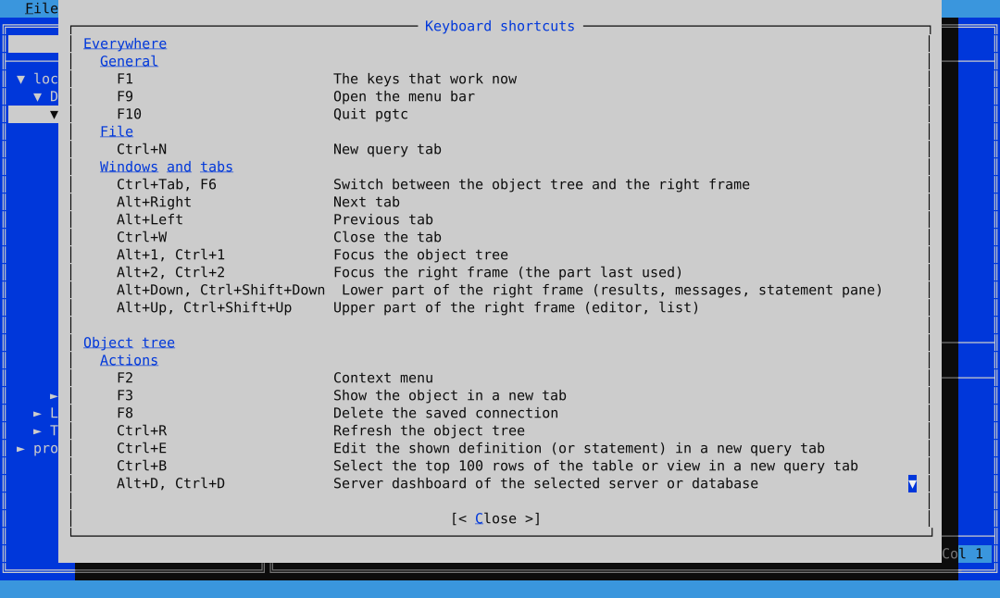

Reference
The command-line options and environment variables, the default key bindings by keymap context, the menus, and the files pgtc reads and writes.
Command line
pgtc [OPTION]... [DBNAME [USERNAME]]The connection options are psql's.
| Option | Meaning |
|---|---|
-h, --host HOSTNAME | host: host name or IP address, or the directory of the server's Unix-domain socket. |
-p, --port PORT | port. |
-U, --username USERNAME | user: the role to connect as. |
-d, --dbname DBNAME | dbname — or a connection URI. |
-w, --no-password | Never prompt for a password. If the server requests one and none is available, the connection attempt fails. |
-W, --password | Always prompt for a password. |
--setup | Run every installation step (today: install the developer templates), print one line per step, and exit. The exit code is not zero if a step failed. |
--install-templates | Copy the developer templates that come with pgtc into your templates folder, and exit. If the folder exists, pgtc asks [y/N] before overwriting its own templates. |
-?, --help | Show the options and exit. (-h is host, as in psql.) |
-V, --version | Show the version and exit. |
Positional arguments as in psql.
Examples
pgtc start with the saved connections
pgtc adventureworks dbname adventureworks on localhost, role = your OS user name
pgtc -h db.example.com -U app adventureworks
pgtc -h db.example.com -p 5433 -U app -W adventureworks
pgtc postgresql://app@db.example.com/adventureworks
pgtc "postgresql://app@db.example.com:5433/adventureworks?sslmode=verify-full"
pgtc --setupConnection URIs
postgresql://[user[:password]@][host][:port][/dbname][?sslmode=...&sslrootcert=...]Also postgres://.
- Percent-encoding is decoded; an IPv6 address goes in brackets (
[::1]). - The query part accepts
sslmode,sslrootcert,host,port,user,passwordanddbname. Any other parameter is ignored, with a warning in the log. - A URI with several hosts is rejected.
Environment variables
| Variable | Meaning |
|---|---|
PGHOST, PGPORT, PGUSER, PGDATABASE | Defaults for host, port, user and dbname. |
PGSSLMODE, PGSSLROOTCERT | Defaults for sslmode and sslrootcert. There is no command-line option for them; give them here or in a URI. |
PGPASSWORD | The password (used for this run only; not saved). |
PGPASSFILE | Another location of the password file. |
PGTC_LOG | Level filter of pgtc's own log. |
Other libpq variables (PGSERVICE, PGOPTIONS, PGAPPNAME, …) are not read. An
invalid PGPORT or PGSSLMODE is an error at start.
Precedence: a URI, then the options, then the environment variables, then the built-in defaults —
host localhost, port 5432, user = your operating-system
user name, dbname = the user name, sslmode prefer.
Effect: with any connection argument, pgtc saves the connection (unless one with the same host, port, database, user and sslmode is saved) and connects it at start.
Keyboard reference
Default bindings by keymap context; the last column is the command name for keymap.toml. F1 in pgtc shows the effective keymap.

keymap.toml.Everywhere [global]
| Key | What it does | Command |
|---|---|---|
| F1 | The keys that work now | help |
| F9 | Open the menu bar | menu |
| F10 | Quit pgtc | quit |
| Ctrl+N | New query tab | new_query |
| F6, Ctrl+Tab | Switch between the object tree and the right frame | switch_panel |
| Alt+1, Ctrl+1 | Focus the object tree | focus_tree |
| Alt+2, Ctrl+2 | Focus the right frame (the part last used) | focus_right |
| Alt+Down, Ctrl+Shift+Down | Lower part of the right frame (results, messages, statement pane) | focus_lower |
| Alt+Up, Ctrl+Shift+Up | Upper part of the right frame (editor, list) | focus_upper |
| Alt+Right | Next tab | next_tab |
| Alt+Left | Previous tab | prev_tab |
| Ctrl+W | Close the tab | close_tab |
Object tree [tree]
| Key | What it does | Command |
|---|---|---|
| Up, Down | Up / down | up, down |
| Left, Right | Collapse / expand | left, right |
| PgUp, PgDn | Page up / down | page_up, page_down |
| Home, End | First / last row | home, end |
| Enter | Expand or collapse the row | accept |
| F2 | Context menu | context_menu |
| F3 | Show the object in a new tab | show_in_new_tab |
| F8 | Delete the saved connection (nothing is dropped on the server) | drop_object |
| Ctrl+R | Refresh the object tree | refresh_tree |
| Ctrl+E | Edit the shown definition in a new query tab | edit_in_query_tab |
| Ctrl+B | SELECT * FROM … LIMIT 100 for the table or view, in a new query tab | select_top_rows |
| Alt+S, Ctrl+S | Quick search | quick_search |
| Ctrl+F | Find an object below the selected tree row | find_object |
| Alt+D, Ctrl+D | Server dashboard of the selected server or database | dashboard |
| Alt+P, Ctrl+P | SQL profiler | sql_profiler |
| Alt+I | Statistics of the selected database | db_stats |
| — | Show / hide system objects | toggle_system_objects |
Editor and object view [editor]
Also the read-only object view and the statement pane.
| Key | What it does | Command |
|---|---|---|
| F5 | Execute the selection or the whole script | execute |
| Alt+Shift+C | Send a cancel request for the running statement | cancel_query |
| F7 | Generate SQL from developer template | new_from_template |
| F4 | psql-style command line | psql_command |
| F8 | Ask AI for SQL — into the editor, never run (AI assistant) | ask_ai |
| Ctrl+Space, Alt+/ | Autocomplete: object names, columns and keywords | complete |
| Ctrl+P | PL/pgSQL mode on / off | toggle_plpgsql |
| Ctrl+E | Edit the shown definition (or statement) in a new query tab | edit_in_query_tab |
| Ctrl+S | Save SQL file | save_file |
| Arrows | Move | up, down, left, right |
| PgUp, PgDn | Page up / down | page_up, page_down |
| Home, End | Start / end of the line | home, end |
| Ctrl+Home, Ctrl+End | Start / end of the text | doc_start, doc_end |
| Ctrl+Left, Ctrl+Right | Word left / right | word_left, word_right |
| Shift+arrows | Select | select_left, select_right, select_up, select_down |
| Ctrl+Shift+Left, Ctrl+Shift+Right | Select word left / right | select_word_left, select_word_right |
| Shift+Home, Shift+End | Select to the start / end of the line | select_home, select_end |
| Shift+PgUp, Shift+PgDn | Select a page up / down | select_page_up, select_page_down |
| Ctrl+Shift+Home, Alt+Shift+Home | Select to the start of the text | select_doc_start |
| Ctrl+Shift+End, Alt+Shift+End | Select to the end of the text | select_doc_end |
| Ctrl+A | Select all | select_all |
| Ctrl+C, Ctrl+Insert | Copy | copy |
| Ctrl+X, Shift+Delete | Cut | cut |
| Ctrl+V, Shift+Insert | Paste | paste |
| Ctrl+Z | Undo | undo |
| Ctrl+Shift+Z, Alt+Shift+Z | Redo | redo |
| Tab, Shift+Tab | Indent / unindent | indent, unindent |
| Enter | New line | newline |
| Backspace, Delete | Delete left / right | backspace, delete |
| Ctrl+Backspace, Ctrl+Delete | Delete the word left / right | delete_word_left, delete_word_right |
| Ctrl+Y | Delete the line (the selected lines) | delete_line |
| Ctrl+F | Find / replace | find |
| F3 | Find next | find_next |
| Shift+F3, Alt+F3 | Find previous | find_prev |
| Ctrl+R | Show / hide the results | toggle_results |
| Alt+M | Switch between results and messages | show_messages |
| Ctrl+PgDn, Alt+PgDn | Next result set | next_result |
| Ctrl+PgUp, Alt+PgUp | Previous result set | prev_result |
| Alt+End | Fetch all rows | fetch_all |
| Alt+Shift+Up, Alt+Shift+Down | Results smaller / larger | results_smaller, results_larger |
Results and messages [results]
| Key | What it does | Command |
|---|---|---|
| Arrows, PgUp, PgDn, Home, End | Move the cell cursor | up … end |
| Ctrl+Home, Ctrl+End | First / last row | doc_start, doc_end |
| Enter | Messages: jump to the editor line of the error | accept |
| Ctrl+C, Ctrl+Insert | Copy the cell / the message | copy |
| Ctrl+A | Select all | select_all |
| F2 | Context menu | context_menu |
| Alt+Right | Next result set, then Messages | next_result_tab |
| Alt+Left | Previous result set or Messages | prev_result_tab |
| Ctrl+PgDn, Alt+PgDn | Next result set | next_result |
| Ctrl+PgUp, Alt+PgUp | Previous result set | prev_result |
| Alt+M | Switch between results and messages | show_messages |
| Alt+End | Fetch all rows | fetch_all |
| Alt+Shift+Up, Alt+Shift+Down | Results smaller / larger | results_smaller, results_larger |
| Ctrl+R | Show / hide the results | toggle_results |
| F5 | Execute | execute |
| Alt+Shift+C | Send a cancel request for the running statement | cancel_query |
| F4 | psql-style command line | psql_command |
| F8 | Ask AI for SQL — into the editor, never run (AI assistant) | ask_ai |
| Ctrl+P | PL/pgSQL mode on / off | toggle_plpgsql |
| Ctrl+S | Save SQL file | save_file |
| — | Export the result | export_result |
| — | Copy all messages | copy_all_messages |
Server dashboard [dashboard]
| Key | What it does | Command |
|---|---|---|
| F5 | Refresh now (reconnects when needed) | dashboard_refresh |
| Ctrl+P | Pause / resume the refresh | dashboard_pause |
| Ctrl+T | Refresh interval (0.5, 1, 2, 5, 10, 30 s) | dashboard_interval |
| Alt+I | Hide / show idle sessions | hide_idle_sessions |
| Alt+T | Session duration: query, transaction or backend time | duration_mode |
| Insert | Tag / untag the session | tag_session |
| Esc | Untag all sessions | clear_tags |
| Alt+Right, Ctrl+PgDn, Alt+PgDn | Next dashboard list | next_list |
| Alt+Left, Ctrl+PgUp, Alt+PgUp | Previous dashboard list | prev_list |
| Alt+Shift+C | pg_cancel_backend() on the selected session | cancel_backend |
| F8 | pg_terminate_backend() on the selected session | terminate_backend |
| Enter | Show the whole row (full query text) | show_row |
| Ctrl+E | The statement in a new query tab | edit_in_query_tab |
| Ctrl+R | Show / hide the statement pane | toggle_results |
| Alt+Shift+Up, Alt+Shift+Down | Statement pane smaller / larger | results_smaller, results_larger |
| F2 | Context menu | context_menu |
| Ctrl+C, Ctrl+Insert; Ctrl+A | Copy; select all | copy, select_all |
| Arrows, PgUp, PgDn, Home, End, Ctrl+Home, Ctrl+End | Move in the list | up … doc_end |
SQL profiler [profiler]
| Key | What it does | Command |
|---|---|---|
| F5 | Start / stop the profiler | profiler_start_stop |
| Ctrl+P | Pause / resume | profiler_pause |
| Ctrl+F | Filter the entries | profiler_filter |
| Ctrl+L | Clear the entries | profiler_clear |
| Enter | Show the whole entry | show_row |
| Ctrl+E | The statement in a new query tab | edit_in_query_tab |
| Ctrl+R | Show / hide the statement pane | toggle_results |
| Alt+Shift+Up, Alt+Shift+Down | Statement pane smaller / larger | results_smaller, results_larger |
| F2 | Context menu | context_menu |
| Ctrl+C, Ctrl+Insert; Ctrl+A | Copy; select all | copy, select_all |
| Arrows, PgUp, PgDn, Home, End, Ctrl+Home, Ctrl+End | Move in the list | up … doc_end |
Database statistics [db_stats]
| Key | What it does | Command |
|---|---|---|
| F5 | Read the statistics again (reconnects when needed) | db_stats_refresh |
| F2 | Context menu | context_menu |
| Ctrl+C, Ctrl+Insert; Ctrl+A | Copy; select all | copy, select_all |
| Arrows, PgUp, PgDn, Home, End, Ctrl+Home, Ctrl+End | Move in the list | up … doc_end |
Template tab [template]
The template editor tab. F5, F7 and Ctrl+T work in every part; the other keys in the header list (elsewhere the [editor] keys apply).
| Key | What it does | Command |
|---|---|---|
| F5 | Test the template in its form (nothing is inserted) | template_test |
| F7 | Helper menu of the template body | template_helpers |
| Ctrl+T | Parameter list / raw header (TOML) | template_raw_header |
| Ctrl+S | Save the template | save_file |
| Ctrl+R | Show / hide the preview | toggle_results |
| Alt+Shift+Up / Alt+Shift+Down | Preview smaller / larger | results_smaller, results_larger |
| Enter | Edit the name, the description or the parameter | template_edit_param |
| Insert | Add a parameter | template_add_param |
| Delete | Delete the parameter | template_delete_param |
| Ctrl+Up, Shift+Up | Move the parameter up | template_param_up |
| Ctrl+Down, Shift+Down | Move the parameter down | template_param_down |
| F2 | Context menu | context_menu |
| Tab, Shift+Tab | Next / previous part of the tab (header list and preview; Alt+Down / Alt+Up everywhere) | next_field, prev_field |
| Up, Down, PgUp, PgDn, Home, End | Move in the list | up … end |
Dialogs, menus and lists [dialog]
| Key | What it does | Command |
|---|---|---|
| Tab, Shift+Tab | Next / previous field | next_field, prev_field |
| Enter | Open / choose / OK | accept |
| Ctrl+Enter | OK from any field (where the terminal reports Ctrl+Enter) | dialog_ok |
| Esc, F10 | Cancel / close | cancel |
| Space | Toggle the checkbox | toggle |
| Arrows, PgUp, PgDn, Home, End | Move | up … end |
| Backspace, Delete | Delete left / right | backspace, delete |
Other keys
| Key | What it does |
|---|---|
| Esc, digit | F1 … F10 (Esc 1 … Esc 0), for terminals without F-keys |
| F9, letter | The menu with that underlined letter |
| Alt+letter | The dialog field with that underlined letter |
Commands without a default key
Menu only; bind them in keymap.toml:
commit, rollback, toggle_auto_commit, toggle_auto_rollback,
export_result, copy_all_messages, save_file_as, open_file,
toggle_system_objects, new_connection, edit_connection, delete_connection,
connect, disconnect, export_definition, load_definition, settings,
run_setup, install_templates, show_templates_folder, keyboard_shortcuts,
third_party_licences, about, template_manager, template_insert_param,
template_insert_construct, template_insert_filter, template_make_param,
template_add_variant.
Menu reference
F9 opens the menu bar. Keys are the default bindings, with their context in brackets.
| Menu | Item | Key | Notes |
|---|---|---|---|
| File | New connection… | Save a new set of connection parameters | |
| Edit connection… | The server of the selected tree row; changed connection parameters disconnect and reconnect the server (its tabs are closed) (details) | ||
| Delete connection… | The server of the selected tree row, after confirmation | ||
| Connect | The server selected in the tree | ||
| Disconnect | |||
| New query | Ctrl+N | Needs a database (or an object below it) selected in the tree | |
| Open SQL file… | |||
| Save SQL file | Ctrl+S | In a query tab | |
| Save SQL file as… | |||
| Export database definition… | Needs a database selected in the tree | ||
| Load database definition… | |||
| Quit | F10 | ||
| View | Refresh object tree | Ctrl+R (tree) | |
| Edit in new query tab | Ctrl+E | The shown definition or statement | |
| Select top 100 rows | Ctrl+B (tree) | Tables and views: SELECT * … LIMIT 100 | |
| Find object… | Ctrl+F (tree) | ||
| Next tab | Alt+Right | ||
| Previous tab | Alt+Left | ||
| Close tab | Ctrl+W | Not the default tab | |
| Query | Execute | F5 | Enabled in a query tab |
| Cancel | Alt+Shift+C | ||
| Fetch all | Alt+End | ||
| Export result… | |||
| Commit | |||
| Rollback | |||
Auto commit [x] | |||
Auto rollback on error [x] | |||
PL/pgSQL mode [x] | Ctrl+P | ||
| Show/hide results | Ctrl+R | ||
| Results / Messages | Alt+M | ||
| Next result set | Ctrl+PgDn | ||
| Previous result set | Ctrl+PgUp | ||
| Tools | Generate SQL from developer template… | F7 | In a connected query tab |
| Developer templates… | Always: the template editor | ||
| psql command… | F4 | In a connected query tab | |
| Ask AI… | F8 (query tab) | A connected query tab, AI set up (AI assistant) | |
| Server dashboard | Alt+D (tree) | Needs a connected server | |
| SQL profiler | Alt+P (tree) | ||
| Settings | Settings… | ||
| AI… | Provider, model and API key of the AI assistant | ||
| Run setup | As pgtc --setup | ||
| Install templates | As pgtc --install-templates | ||
| Show templates folder | |||
| Help | Keyboard shortcuts | Every key of your keymap, and the path of keymap.toml | |
| Third-party licences | |||
| About pgtc | Version, copyright, licence |
Files and folders
| Platform | Config folder | Data folder |
|---|---|---|
| Linux | ~/.config/pgtc (or $XDG_CONFIG_HOME/pgtc) | ~/.local/share/pgtc (or $XDG_DATA_HOME/pgtc) |
| macOS | ~/Library/Application Support/pgtc | |
| Windows | %APPDATA%\pgtc | |
| File or folder | In | What |
|---|---|---|
settings.toml | config | Settings and saved connections (no passwords) |
keymap.toml | config | Your key-binding overrides (you create it) |
ai_key | config | The AI provider's API key, when it is kept in a file (AI assistant); readable only by you |
developer_templates/ | data | Developer templates |
themes/ | data | Your own colour schemes |
logs/ | data | Log files pgtc.YYYY-MM-DD.log, one per day; the last 7 are kept |
profiler_restore.toml | data | Logging parameters the profiler changed and has not restored yet (no passwords) |
window.toml | data | Windows only: position of pgtc's own console window |
.pgpass / pgpass.conf | libpq's location | The password file, shared with psql and other libpq clients — ~/.pgpass, %APPDATA%\postgresql\pgpass.conf, or PGPASSFILE |
Log
pgtc logs to a file, never to stdout or stderr. Default level info; PGTC_LOG takes a level or a per-module filter (PGTC_LOG=debug, PGTC_LOG=pgc_db=trace).
Window position (Windows)
Started from Explorer, a shortcut or Win+R, pgtc has its own console window and restores its position and maximized state. A terminal you opened yourself is never moved.
About and licences
PostgreSQL Licence. The catalog queries are adapted from pgAdmin 4 (same licence).